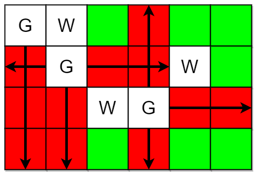
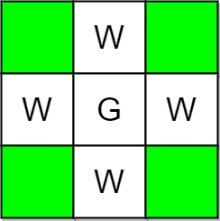

| Category | Difficulty | Likes | Dislikes |
|---|---|---|---|
| Algorithms | Medium | 1287 | 91 |
array | matrix | simulation
facebook | google | microsoft | poshmark
You are given two integers m and n representing a 0-indexed m x n grid. You are also given two 2D integer arrays guards and walls where guards[i] = [rowi, coli] and walls[j] = [rowj, colj] represent the positions of the ith guard and jth wall respectively.
A guard can see every cell in the four cardinal directions (north, east, south, or west) starting from their position unless obstructed by a wall or another guard. A cell is guarded if there is at least one guard that can see it.
Return the number of unoccupied cells that are not guarded.
Example 1:

Input: m = 4, n = 6, guards = [[0,0],[1,1],[2,3]], walls = [[0,1],[2,2],[1,4]]
Output: 7
Explanation: The guarded and unguarded cells are shown in red and green respectively in the above diagram.
There are a total of 7 unguarded cells, so we return 7.Example 2:

Input: m = 3, n = 3, guards = [[1,1]], walls = [[0,1],[1,0],[2,1],[1,2]]
Output: 4
Explanation: The unguarded cells are shown in green in the above diagram.
There are a total of 4 unguarded cells, so we return 4.
Constraints:
1 <= m, n <= 1052 <= m * n <= 1051 <= guards.length, walls.length <= 5 * 1042 <= guards.length + walls.length <= m * nguards[i].length == walls[j].length == 20 <= rowi, rowj < m0 <= coli, colj < nguards and walls are unique.